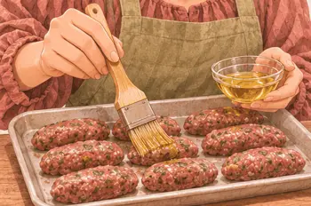
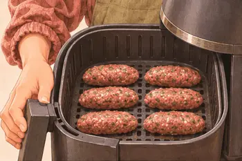
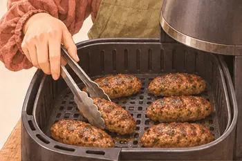
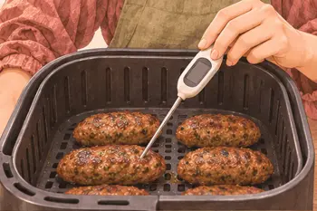
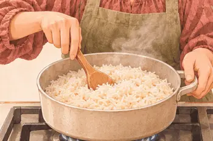
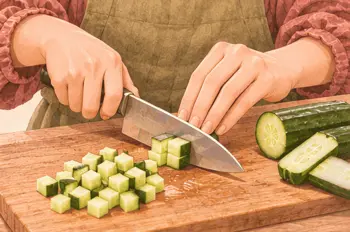
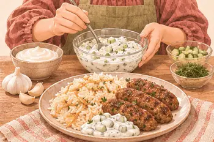

بروتين٤١ غ
كربوهيدرات٥٠ غ
دهون١٢ غ
ألياف١.٠ غ
كالسيوم١٦١ ملغ
حديد٥.٨ ملغ
بوتاسيوم٨٦١ ملغ
فيتامين ج٣ ملغ
القيم الغذائية تقديرية للحصة الواحدة.
مكوّناتك
الوزن بالجرام. حدّد ما جهّزته.
| المكوّن | حصة | ٣ حصص | ٤ حصص |
|---|---|---|---|
| ١٥٥ | ٤٦٥ | ٦٢٠ | |
| ١٥٠ | ٤٥٠ | ٦٠٠ | |
| ٨٠ | ٢٤٠ | ٣٢٠ | |
| ٦٥ | ١٩٥ | ٢٦٠ | |
| ٣ | ٩ | ١٢ |
الأدوات: قلاية هوائية، ملقط، ميزان حرارة
يلا، نطبخها معًا.
خذ وقتك، واتبع الصور على راحتك.
الخطوة ٠١
شكّل اللحم ٣ أصابع بسمك ٢ سم.
الخطوة ٠٢
اغسل يديك وسطح العمل.

الخطوة ٠٣
ادهن الكفتة بالزيت.

الخطوة ٠٤
رتّبها بطبقة واحدة في القلاية على ١٩٠°م، مدة ١٠–١٥ دقيقة.

الخطوة ٠٥
اقلبها في منتصف الوقت.

الخطوة ٠٦
افحص المركز. أكمل الطهي حتى ٧١°م.

الخطوة ٠٧
سخّن الأرز.

الخطوة ٠٨
قطّع الخيار مكعبات.

الخطوة ٠٩
اخلطه بزبادي الثوم وقدّمه مع الكفتة والأرز.